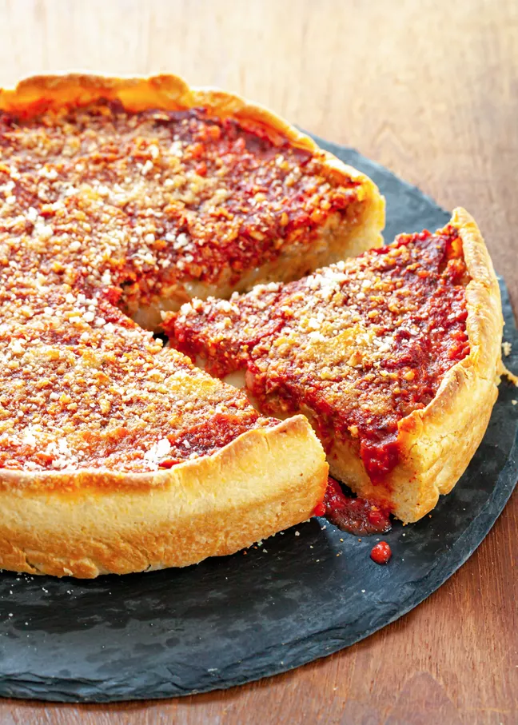

Deep Dish Pizza Dough

Description
A great deep dish pizza dough. This amount is enough for either one large pizza or two medium pizzas. Best baked in a cast iron pan.
Ingrediants
- 380 G All Purpose Flour
- 24 G Cornmeal
- 4.6 G Instant Yeast
- 3.4 G Sugar
- 3.4 G Sea Salt
- 222 G Water
- 74 G Vegetable Oil
- Butter
- 1 Tbsp Olive Oil
Steps
- Add flour, cornmeal, yeast, sugar and salt to stand mixer with dough hook attached.
- Heat water between 105-110 Degrees F
- Add water and vegetable oil to the bowl of the stand mixer. Mix all ingredients on low speed until no dry flour remains and then continue kneeding four about 5 minutes until the dough is smooth. The dough should pull away from the sides of the bowl.
- Use the olive oil to grease a large bowl and transfer the dough to the now greased bowl
- Cover and let rest until doubled in size, about 2 hours.
- Use the butter to grease the cast iron pan or the pan of your choosing.
- Press the dough out by hand covering the bottom and up the sides of the pan.
- Let rest for 5-10 minutes.
- After this your pizza dough is ready for whatever toppings you would like.
- This dough usually taker about 25 minutes in a 500 degree F oven to finish cooking,